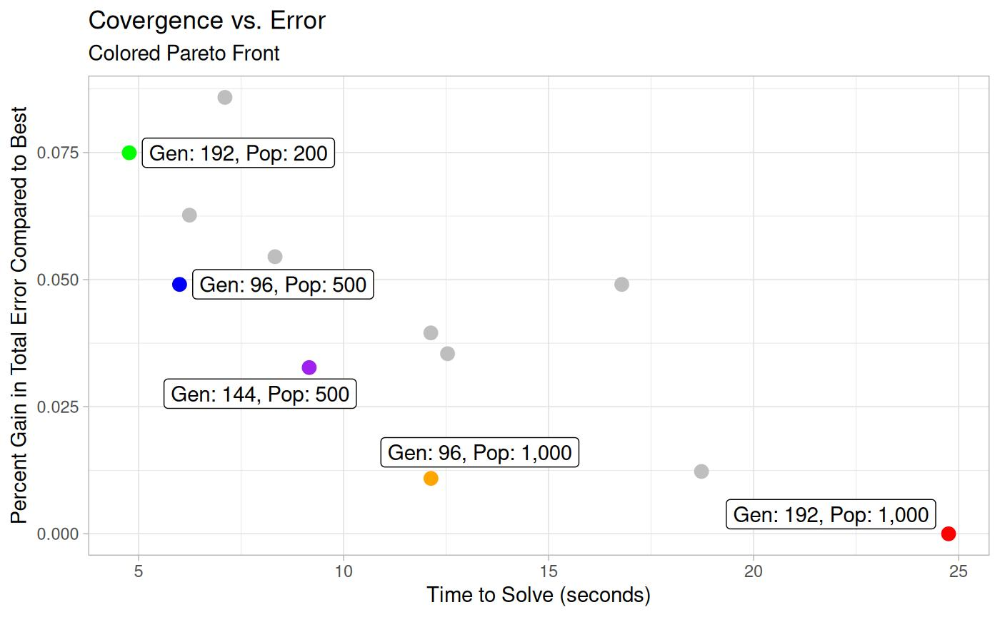
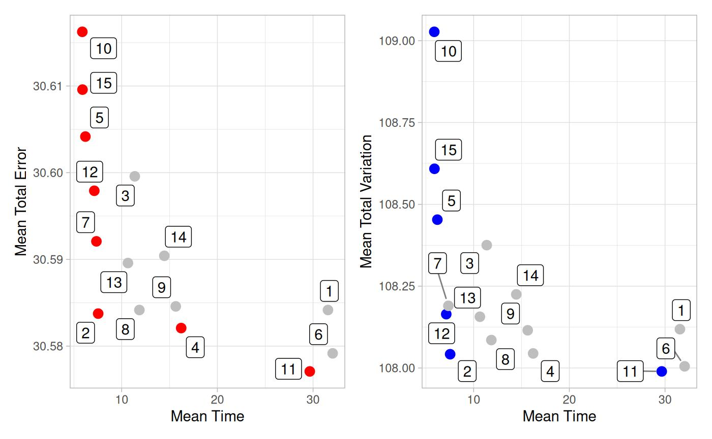

Fine Tuning NSGA-2
Mike Johnson
Lynker, NOAA-AffilateSource:
vignettes/optimize-nsga2.Rmd
optimize-nsga2.RmdEvolutionary Algorithms are inspired by traits of biological evolution including reproduction, mutation, recombination, and selection. Possible solutions to a given problem act as members of a population, while a prescribed fitness function determines the quality of each member.
Evolutionary algorithms often perform well for all types of problems because they do not make assumptions about the underlying fitness landscape. That said, there are things we can do to (1) set expectations about the fitness landscape (2) define an idealized population to solve our given task and (3) understand the nuances of which EA implementation we use (and how we use it)
Doing all of these well provides a more robust solver that can more readily handle a range of inputs, without re calibration.
The solver we use the the NSGA-2 solver implemented in
the mco package.
Solver
We use NSGA-2 as prior experiments showed that solving AHG relationship, in a mass conserving way, is often a multi-criterion problem with a Pareto front of solutions.
Defining bounds
The NSGA solver requests (but doesn’t require) a set of lower and upper limits over which to search. Setting these helps limit the search space, and therefore returns skilled solution more quickly (if at all).
Our method for setting these bounds is as follows:
- Fit NLS to each individual relation as prior work showed that in every case NLS (seeded with OLS solutions) provides the best estimation of an individual relationship but often fails to meet continuity.
- Scale by set factor
- This limits the exponent at coefficients to the range of {(1/scale) * nls; scale * nls}

The default for scale is 1.5, and if left to NULL the respective parameters limits will be set to the maximums (+10%) found in Asfari 2018.
Parameterizing the model
Fine tuning an evolutionary algorithm is a balancing act between time to converge and accuracy.
In the NSGA-2 model there are 4 parameters that can be tuned:
- Population Size: How many solutions are created in each generation
- Generation: How many generations are created
- Cross over probability: Determines the likelihood that crossover will occur between two parent solutions.
- Mutation probability: Determines the likelihood that an individual will undergo the mutation process
Population & Generation
First we will try to identify a optimal population and generation size for this problem by holding the cross over and mutation probabilities constant at the middle value of our total grid.
To do this, we build out a text matrix of generation and
population sizes, and use the default mprob
and cprob (all with a seed of 1).
The plot and table below show how solutions balance the % gain from the “best” solution against time to solve. The effective Pareto front of solutions is colored and labeled and all are equally valid solutions depending on the desired goal (maximum speed, minimal error, some balance)
seed <- 1
mprob <- c(.2)
cprob <- c(.7)
gen <- c(16, 24, 32, 48, 96, 144, 192)
pop <- c(100, 200, 300, 500, 700, 1000)
Cross over and Mutation Probability
Next, using our idealized generation and population size, we can turn to the other two probabilistic inputs:
- Cross over
- Mutation
# high crossover, low mutation
c(.8, .05)
# high-ish crossover, low-ish mutation (nearly mco default)
c(.6, .2)
# moderate crossover, moderate mutation
c(.4, .4)Here, we tested the 15 combinations (3 probabilities, 5 gen/pop combinations) for 25 gauged locations.
Below plot (A) shows the mean error of each combination across the 25 locations against the mean time to converge. Plot (B) shows the mean variance in each grouping against the mean time to converge.

Influence of Seed
The only way to get repeatable results from an algorithm like
nsga2 is to set a seed.
To illustrate this, and ensure the solution found above is not overly sensitive to seed, we ran the algorithm 100 times using seeds 1 - 100.
Overall, 96% of the tests fell within 2.5% of the best solutions error. In total there was a range of 0.76 total nRMSE across solutions.
This give us confidence that the solution space defined is adequate for solving this problem in a general way.
Flexibility
Certainly, this in not a end all be all solution and different
objectives might want different solutions. In this case the following
options are exposed in ahg_estimate:
times: represents the number of times the solution should be run with different seeds (
1:n()) and is exposed inahg_estimategen: Number of generations to breed.
pop: Size of population
cprob: Crossover probability
mprob: Mutation probability